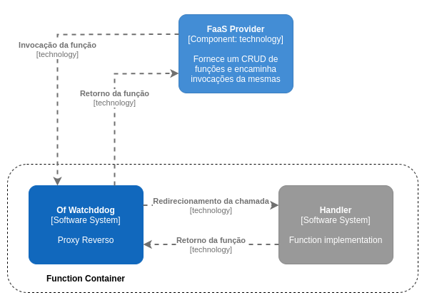

OpenFaaS Of-Watchdog
Autores
Este documento foi produzido por David Ferreira Quaresma.
- Matrícula: 116210041
- Contato: david.quaresma@ccc.ufcg.edu.br
- Projeto documentado: https://github.com/openfaas/of-watchdog
Descrição Arquitetural – Proxy Reverso do OpenFaaS (Of-Watchdog)
Este documento descreve parte da arquitetura do projeto OpenFaaS, mais precisamente o componente chamado Of-Watchdog - uma versão alternativa do watchdog clássico do OpenFaaS. Essa descrição foi feita com baseada no modelo C4.
Vale salientar que neste documento não será descrito toda a arquitetura do OpenFaaS, como já mecionado. Aqui iremos descrever o proxy reverso utilizado pela plataforma, componente este de função essencial para a comunicação com as funções conteinerizadas e extração de métricas.
Descrição Geral sobre o OpeFaaS
O OpenFaaS é um framework de provisionamento de funções como serviço que possibilita a rápida implementação e deploy de aplicações sob o paradigma de computação em Funções como Serviço, também se responsabilizando pela escalabilidade da aplicação (pré configurada pelo usuário). Para mais detalhes sobre esta plataforma, visite este link
Of-Watchdog - Proxy reverso do OpenFaaS
Objetivo Geral
Implementar um servidor HTTP que atua como um proxy reverso para a execução de funções e microserviços, podendo ser usado de forma independente ou como um ponto de entrada para conteineres com o OpenFaaS.
Objetivos Específicos
Possibilitar uma versão do watchdog que dê suporte para proxy HTTP e STDIO, o que habilita o reuso de memória (em contraste ao clássico que precisa iniciar um novo conteiner para cada invocação de função) e um atendimento de requisições mais eficiente (devido a não necessidade de iniciar novas instâncias para a atender requisições).
Contexto
No OpenFaaS, cada função é encapsulada em um contêiner, e dentro dele há o handler da função e o proxy reverso. Neste contexto, o Of-Watchdog (um proxy reverso, como já mencionado) executa dentro do contêiner e junto à função. Além do próprio handler da função, o Of-Watchdog também comunica-se com o FaaS Provider (responsável por encaminhar requisições às réplicas de funções)

Containers
Uma vez que o OpenFaaS trata-se de uma plataforma de funções como serviço, é natural que seus componentes esteja decomposto à nível de contêineres. Nesta seção iremos apresentar os componentes mais próximos do of-watchdog, que são eles o próprio contêiner em que o of-watchdog executa e o contêiner em que executa o outro processo que se comunica com o of-watchdog, o Faas Provider.

Visão de Informação
A principal informação que trafega através do Of-Watchdog são as requisições enviadas às funções em que o Of-Watchdog está proxeando. Neste caso, a requisição advinda do FaaS Provider (que a recebeu do OpenFaaS Gateway) é interceptada pelo Of-Watchdog e encaminhada para o Handler da função.

Contribuições Concretas
Descreva aqui os PRs enviados para o projeto e o status dos mesmos. Forneça os links dos PRs.